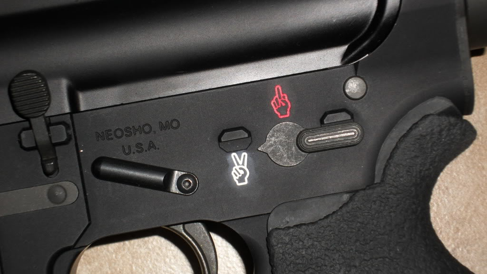
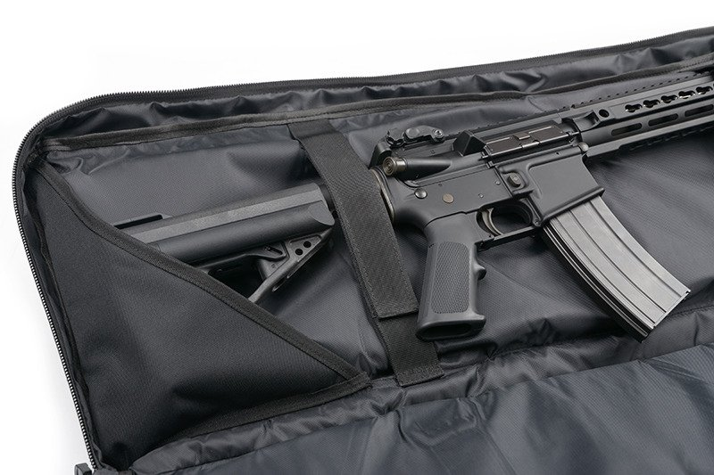
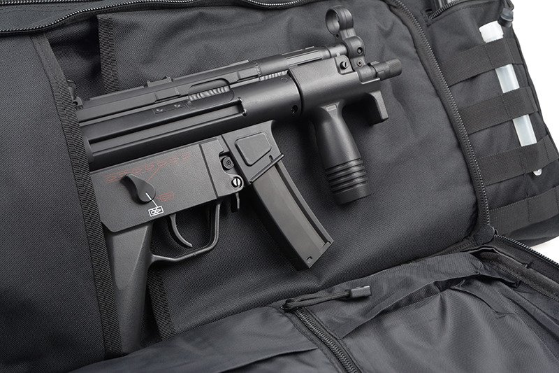
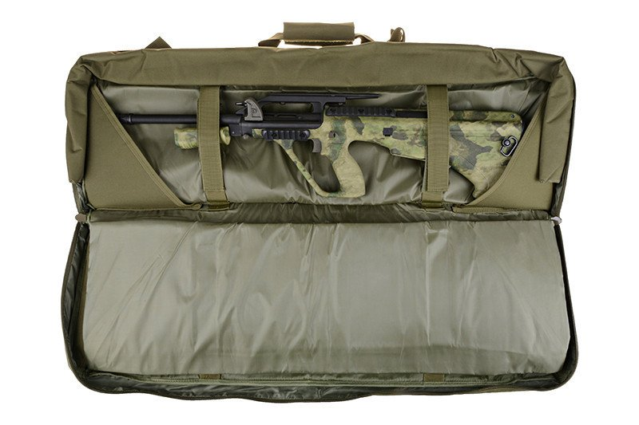
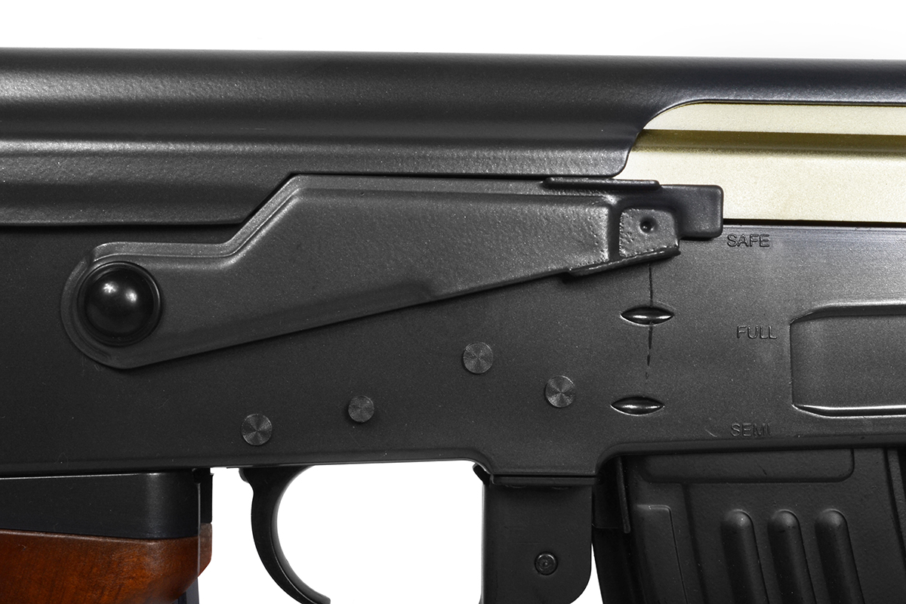
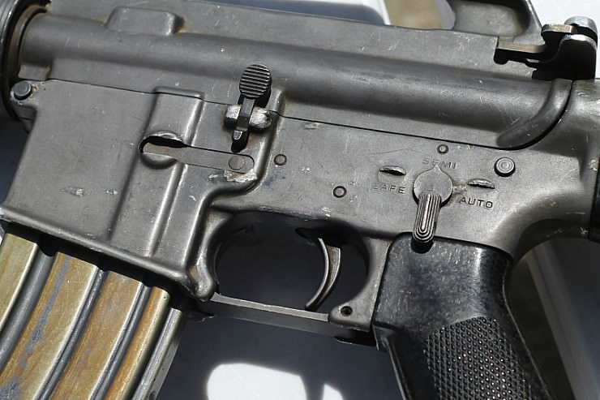
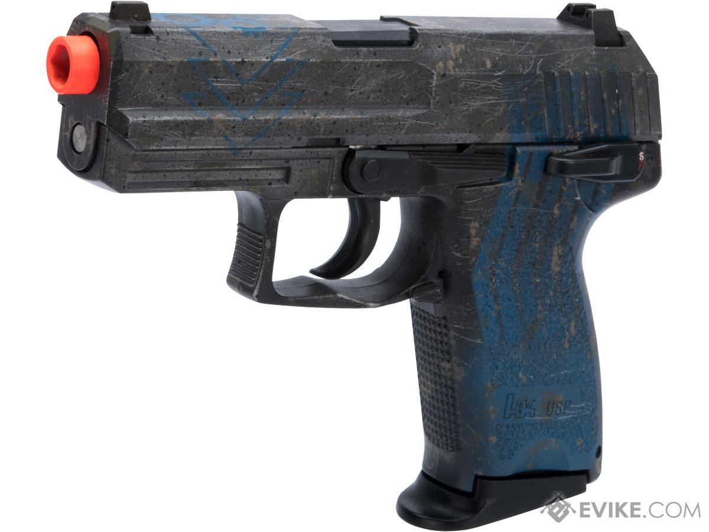
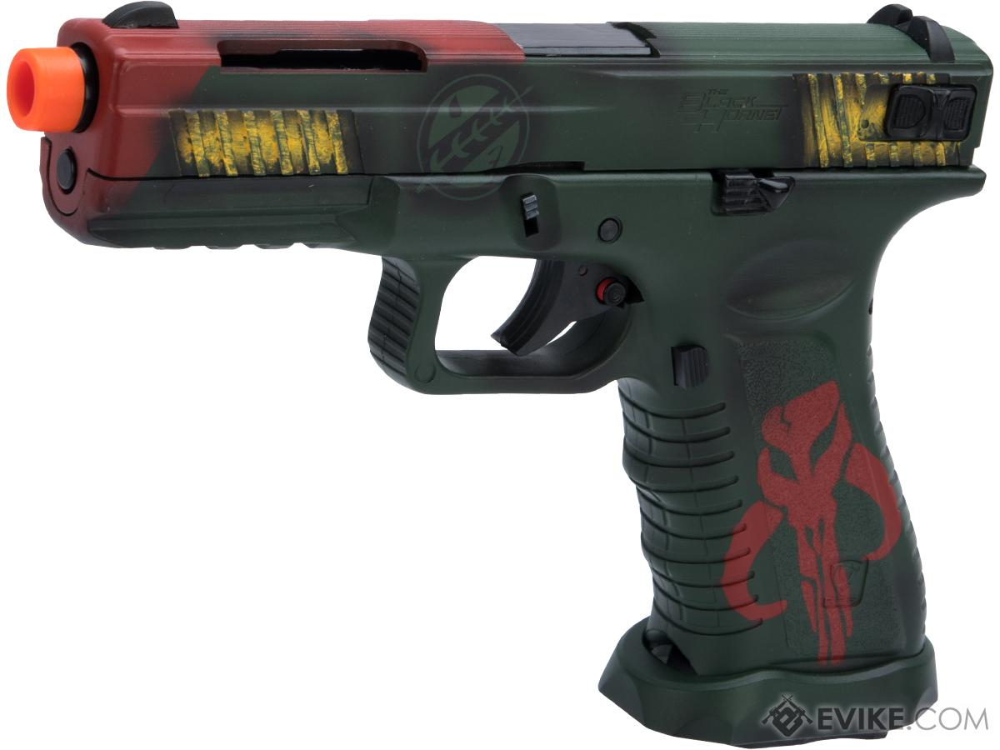
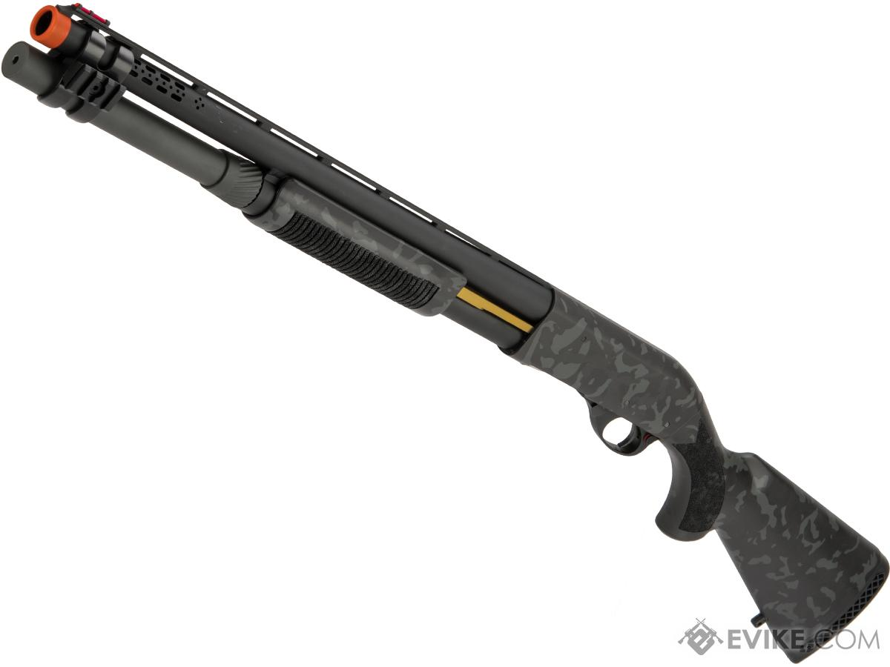

Airsoft is more than only shooting BB’s from your most important piece of equipment. It is also about safety on the field as well as off the field.
Airsoft safety is about different things. It’s about the law, knowing the field rules, wearing safety gear, how to treat your replica and Airsoft safety for kids.
This article is about everything you need to know about Airsoft safety. Is Airsoft safe? YES, Airsoft is safe! As long as you respect local law and field rules, having proper safety gear and treat your gun like a real firearm.
Instead of sitting down behind my computer playing Command an Conquer I now play Airsoft. It’s much, much more fun and you meet other people with the same interest. It’s awesome!

Airsoft (Safety) Rules On The Field
Your number one priority is to protect yourself. This is because it really hurts when you get shot and a BB hits you. You even can get injured when wearing no proper safety gear.
First you should wear safety goggles during the game. On most Airsoft fields it is prohibited to play Airsoft without safety goggles.
I recommend to wear a face mask too. Not only your eyes but your whole face is very sensitive. You definitely feel some pain when you get hit in your face.
Additionally I would even recommend a shemagh.
Next up. Practice safe trigger discipline. Hold your finger on the side of the lower receiver at all times. When you are ready to fire, only then bring your finger
to the trigger.
The same applies to muzzle awareness. Only point your replica at whoever you’re aiming to actually fire upon. Only in that instance you should have your
finger on the trigger when you’re on the field.
Notify the enemy when you got hit. Shout “HIT” and act like being hit. Don’t cheat here and paly a fair game.
Your opponent is considered alive until he announces he has been hit. I someone is cheating then it is it’s own responsibility.
After being hit, a medic has 5 minutes to treat you. If a medic can’t make it in 5 minutes the Airsoft player who got hit is considered dead. The maximum
treatment time is 2 minutes.
If only your replica was hit, you can use your secondary. You only may use your primary after you’ve been through the respawn area.
If a player is considered dead, he walks with a dead rag over his head to the respawn area. I know it’s tempting to reveal enemy positions during your way to
the respawn area but please don’t. Keep it fair play.
As a grenadier you’re likely to use a grenade when necessary. But when is your opponent considered as dead? Well, if a grenade explodes within 3 meters and
when there is no obstruction in between.
A respawn is considered some sort of Safe Zone. Therefore it’s forbidden to shoot through the respawn area.
Let the Off Zone be the Off Zone. Make sure that everyone put his replica on safe.
In my search for field rules I found a great video from Airsplat who defines clearly what is allowed or not. Maybe you’ve seen it once.
Airsoft Safety Gear
Face protection should paramount for all Airsofters. We play Airsoft because we want to have fun.
What is worse than getting injured while it was preventable? Many
Airsofters become aware of safety issues over time. And by experience. To help you further in becoming more aware we discuss the main safety gear to keep you out of trouble.
Airsoft Safety Googles
All Airsofters know that you must always wear eye protection. On most fields it’s even prohibited to have no face protection. When looking for the right eye protection, be aware of the difference in quality. Look for eye protection that is impact rated. The ANSI Z 87 is a well known characteristic of an impact rated goggle. In Europe it’s EN 166.
These characteristics are very import because many goggles and glasses which are marked for Airsoft will not provide adequate protection. A mesh mask for example can get fragmented when you get shot and result in shards of plastic that will hit your eye. So be careful in choosing the right face protection.
Additionally look for eye protection that has a fully seal. This will prevent a BB entering into the sides of your goggle causing injury on your eyes.
Airsoft Safety Mask
To protect your cheeks, teeth and ears use full face mask. Your face is more sensitive than other parts of your body so don’t save on protective gear. I recommend a full
face mask with goggle to protect your whole face
Airsoft Safety Footwear
One of the most common injuries in Airsoft is rolled ankles. Airsoft fields are pretty hazardous and uneven so it’s easy to lose your footing. We definitely recommend
some military boots. Instead, we don’t recommend wearing some sneakers or something similar because these ar not proper footwear for Airsoft.
Good military Airsoft boots will help you provide adequate ankle protection that will help you keep your footing. If you you step on something sharp or uneven, your
boots will prevent you from rolled ankles because of their rugged construction.
Carry A First Aid
Not every Airsofter needs to carry a first aid kit. I’d like to see that at least one or two of my teammates has a first aid kit. Before we get started or even hit the field we also make sure that all of or teammates know who is the first aider.
We also plan on where we locate first aid kits in case somebody get really injured. Unfortunately carrying a first aid kit is not enough….You should know how to use it.
Therefore one or two teammates should best have had a first aid training. A typical first aid kit contains of triangle and compression bandages, gauze, nitrile gloves, scissors,
medical tape and antiseptic spray.
How to Treat Your Treatment
One of the most important rules in Airsoft: treat your gun as it is a real firearm and as it is loaded at any time. Draw for Airsoft is it’s realistic nature and closeness of
relation to real firearms. Real firearms should be treated with respect and responsibility. The same requires for an Airsoft gun.
In my research to what the law states the word “toy” has been used several times. That surprised me. Is it a toy? Well, I don’t think it’s a toy. In many cases minors need
supervision from their parents. You can call it a toy but in fact it’s a “device” that fires a projectile round an with that comes the responsibility that we should all be taking
part of. How to take your responsibility?
Muzzle Awareness
Be aware of where your muzzle is being pointed. Most beginners are to busy with other things like operating their gun and not being hit. This causes an unawareness of where they point their muzzle.
Never point your gun at anything you are not willing to shoot at. Make sure you have pointed your gun either in the sky or towards the ground. When you’re not
playing you can use a barrel sock to avoid potential injuries. Many fields even require them so to make sure that nothing comes out or your barrel when you’re not intend
to.
Trigger Discipline
Be aware of where you put your finger when you not intend to pull the trigger. Your finger should always be above the trigger on the side of the receiver. Do this with every Airsoft gun and treat it like a real firearm. That way you and others stay safe and get not accidentally injured.
The goal to create trigger awareness is to avoid common injuries. Taking that one step further, eject your magazine when you’re exiting the field or when you’re not in
play. Doing that by taking the magazine out of your gun and shoot several times and put it on safety. By shooting several times you make sure that your breech load is
clear. So when you exit the field there is no possibility of any accident or mistake happening when using the gun in an inappropriate area.
Storage
When you store your Airsoft replica make sure that it is unloaded, the magazine is released and nog BB’s are left in the chamber. If it’s a gas powered make sure that you expel any gas in the magazines. If you have an AEG always disconnect the battery before you store your replica.
Two reasons: it’s better for the battery and it guarantees that it will not fire when it’s stored.
Keep your gun safe in a lockable gun bag / carrying case. Only you have access to your replica. Keep it in a gun case until you get to the field or a gun repair. If you can’t afford an gun bag you can use your Airsoft box that every gun comes in.
We wouldn’t recommend to put your gun in a backpack or any other storage compartment. Of course it’s the cheapest option but it’s not prohibited. Besides that, gun bags are very affordable these days.



Put Your Replica On Safe


When not in use, put your gun on safe. That will prevent you from accidentally pulling the trigger, in the moment your gun should on safe and pointed away from people.
Check Your Chamber/Barrel
There will usually be a BB in the chamber after you release your magazine. To clear the barrel and or chamber do this: unload your magazine, fire a couple of times in a safe direction away from others and put it on safe.
Clearing your Airsoft replica away from others will make sure that you’re being safe off the Airsoft field. That causes an unnecessary strain on your gears, your piston
and your spring. That will result in a lower spring tension has a negative impact on accuracy and FPS.
Orange Tip
The main reason for the orange tip is to differentiate your Airsoft replica from a
real firearm.
It is even mandated by the Federal Law that an Airsoft replica is sold with an
orange tip. Airsoft replica with orange tipIs it allowed to remove the orange tip? It
depends on your local state law.



CONCLUSION ON SAFETY
Is Airsoft safe to play? Yes, like any other sport it is safe as long as you know the law, follow the rules, handle your replica with respect and use proper safety gear.
Unfortunately there is still that stigma on playing with Airsoft replica’s. A lot of people will freak out if they see a child with an Airsoft replica in public. Several shooting incidents in the past are of course the main reason for that. But most of these incidents were caused by confusion with real guns. And therefore I do say it again: DON’T take your gun out in public!
Many parents fear that their kids are going to change in a violent person. Well, it’s actually not the gun that made them a violent person. If they really want to hurt somebody they can do it with whatever they want…So don’t blame this fantastic sport.
Is it safe for you kids? Well it depends. And only you parents know that. Do you feel that you kid has the maturity to be responsible owning and operating a gun, keep it out of public view and wear proper safety gear. It’s up to you parents to judge whether if they can or not.